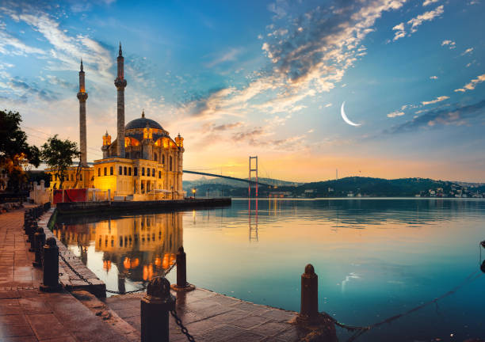
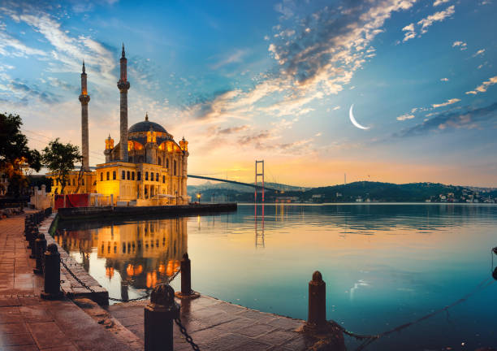

İstanbul Hakkında
İstanbul, tarih boyunca birçok medeniyete ev sahipliği yapmış, kültürel ve tarihi zenginlikleriyle dünyanın en önemli şehirlerinden biridir. Bizans, Osmanlı ve Cumhuriyet dönemlerinin izlerini taşıyan bu şehir, tarihi yarımada, boğaz ve modern yaşamı bir arada sunar. İstanbul, hem kültürel hem de ticari açıdan Türkiye'nin en önemli merkezi olup, dünya çapında birçok turistin ilgisini çeker.
Ziyaret Edilmesi Gereken Yerler:
- Ayasofya: Bizans İmparatoru I. Justinianus tarafından inşa edilen Ayasofya, hem kilise hem cami olarak kullanıldıktan sonra günümüzde müze olarak ziyaret edilmektedir. Mimari ihtişamı ve tarihi önemi büyüktür.
- Sultanahmet Camii: Mavi Camii olarak da bilinen bu cami, Osmanlı İmparatorluğu'nun zarif örneklerinden biridir. İç mekanındaki mavi çini karoları ile ünlüdür.
- Topkapı Sarayı: Osmanlı İmparatorluğu'nun yönetim merkezi olan bu saray, sultanların yaşam alanları ve zengin koleksiyonlarıyla dikkat çeker. Sarayda yer alan Harem, kutsal emanetler ve mutfaklar ziyaretçilerin ilgisini çeker.
- Kapalı Çarşı: İstanbul'un en büyük ve en eski kapalı çarşısı olan Kapalı Çarşı, 4.000'den fazla dükkanıyla alışveriş meraklıları için bir cennettir.
- Galata Kulesi: İstanbul'un en eski yapılarından biri olan Galata Kulesi, muazzam manzarasıyla şehri farklı açılardan görme imkanı sunar.
- Büyükada: İstanbul'un Prens Adaları'ndan biri olan Büyükada, deniz manzarası ve sakin atmosferiyle popüler bir kaçamak yeridir.